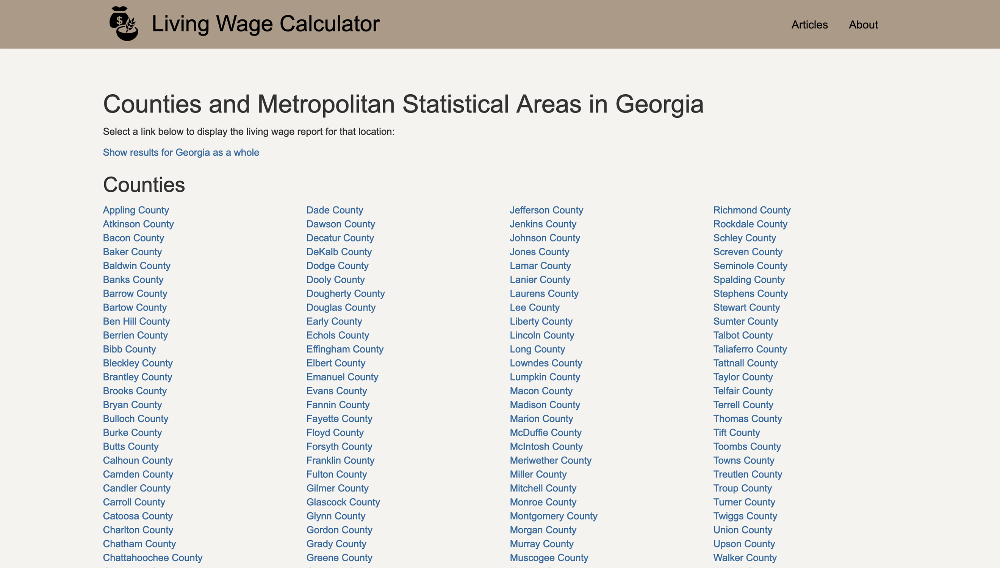

Living Wage Calculator
Information Design
Duration
1 week
Skills
- UX Analysis
- Wireframing
- Prototyping
Tools
Sketch
Principle
Introduction
This was a personal exploration I did during one of my breaks from school to practice critiquing informational artifacts and using animation software. The calculator I studied can be found at livingwage.mit.edu. The site has since been updated -- the process below documents how the calculator looked as of winter 2018 along with my application of a different UI that perhaps offers a different solution based on a more focused review of key use cases.
The Problem

Low-contrast, underwhelming color palette
The site has a brown/tan/cream color palette that looks outdated and doesn't help to establish itself as an academic source. A cleaner, more cohesive design language can help achieve a more sophisticated and reputable look. Many banking, realty, and career sites have a combination of white and one bright accent color, and it looks much cleaner and more sophisticated than this muted color palette here.
Choosing a location could be simplified
Instead of a series of overwhelming lists, a text field with an autocomplete function could simplify the search process. For casual users of the calculator in particular, filtering by a city does not need to be facilitated by two steps. Switching to a search box would offer a more streamlined experience.

Lack of visual hierarchy in results
The site presents results to the user in the form of a chart divided by family size. For users looking for a particular family size and situation, there's no need to include all family size options. Adding a selection to the calculation in the screen prior would eliminate the need for the user to scan the chart to find their result.
Use Cases
-
Calculating a current living situation
Rebecca is looking for a job in Madison, Wisconsin and wants to know how much she has to make to support herself.
-
Calculating a possible living situation
Kimberly and her significant other live together in Glendale, Arizona. They are considering starting a family soon and want to make sure they are financially ready.
-
Comparing a possible living situation with a current living situation
Mariam is currently living in Raleigh, North Carolina and is considering moving to San Diego, California to be closer to family. She wants a general idea of how her cost of living will change.
Areas of Improvement
- I updated the UI from muted browns to a cleaner theme of white and teal.
- Instead of separating the location user input into a text field and the list of links, I simplified it to a text field only. Scanning the alphabetized list of locations takes more time than using a text field with an autocomplete function.
- Since most users won't need the results for all available family types, I added family size as a selector in the input screen to help emphasize the most relevant data.
- Finally, I organized the results to reflect a sense of visual hierarchy and gave the user additional options to further personalize their results.
Conflicting Metrics
In some cases it would be useful to see the results for multiple living situations at once. However, for the purpose of a simple calculation, it would be clearer for the user to see one result rather than multiple results as a default. Adding a Compare Results feature separately may mitigate this issue.
Sketch Explorations
For the purposes of this exercise I adapted Karol Ortyl's split-screen design.

Final Result